Toggle navigation
kesernetwork
0.0.0.9000
Get started
Articles
Network
Troubleshooting
Reference
CELEHS Software
Step-by-step
Source:
vignettes/main.Rmd
main.Rmd
Welcome!
Welcome to the KESER network app.
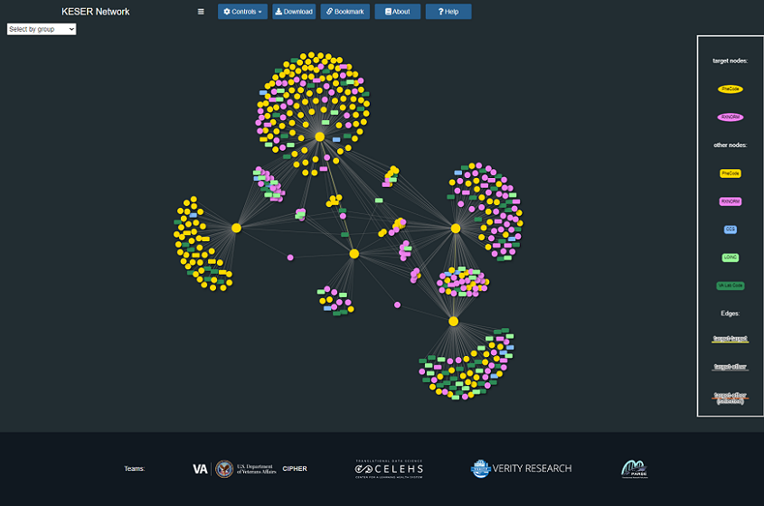
Step1
Select a data set of Knowledge network construction method.
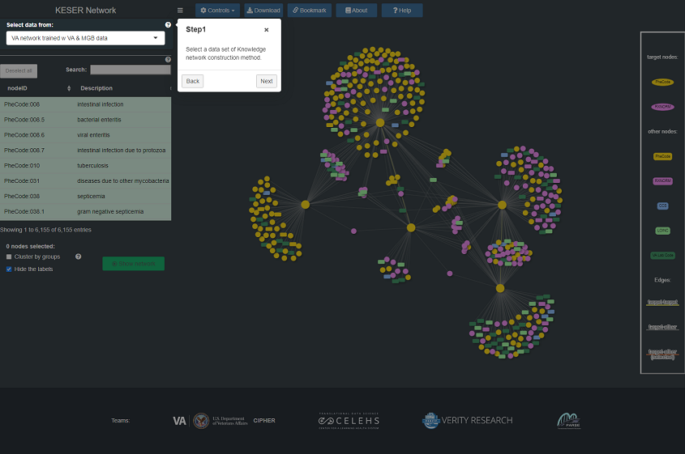
Step2
Select some target nodes (green rows) as candidate nodes to display the network.
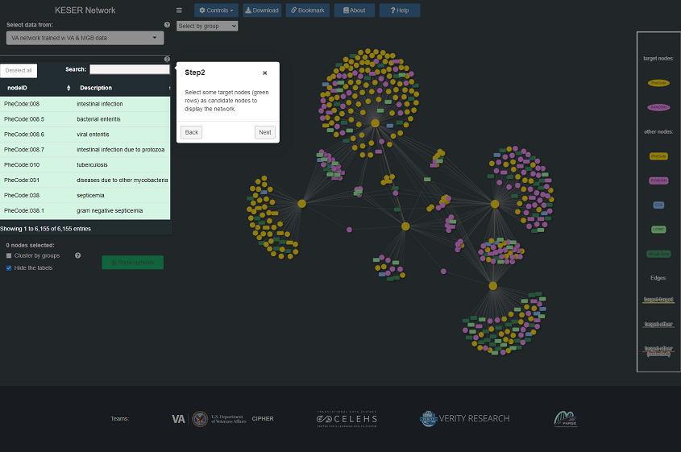
Step3
Screening selected rows for candidate nodes.
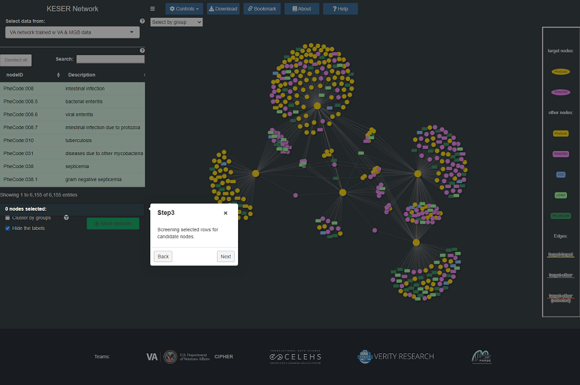
Step4
Setting:
- Cluster nodes by groups.
- Show/Hide the labels in the network.
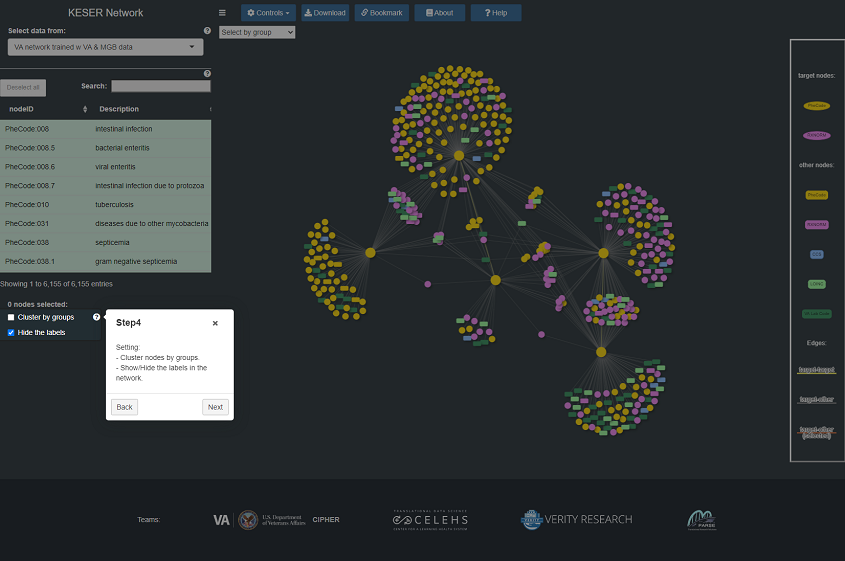
Step5
Confirm submission.
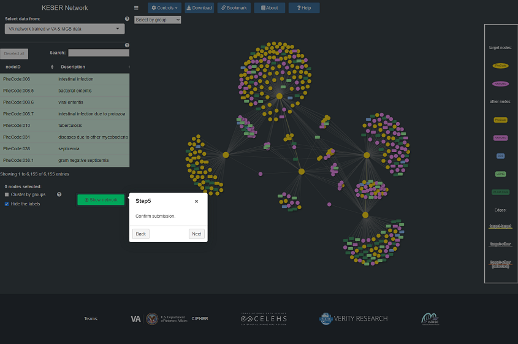
Network
Main page of the network.
- Click/hover on a node to see the details.
- Scroll to zoom in and out.
- Legend's in the right box.
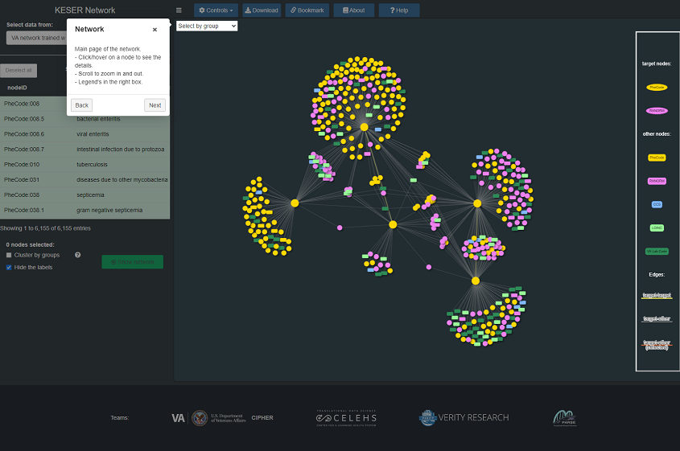
Collapse sidebar
Collapse/expand the sidebar.
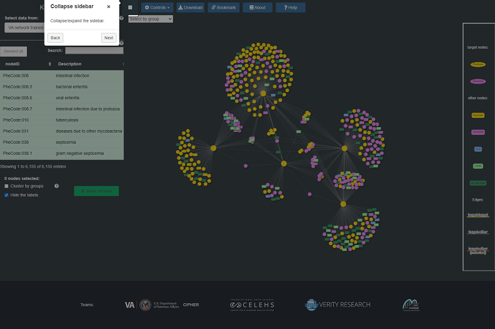
Controls
Controls of the network:
- Set the layout of the network.
- Selete a node to focus on.
- Set the zoomlevel.
- Set the height for network graph.
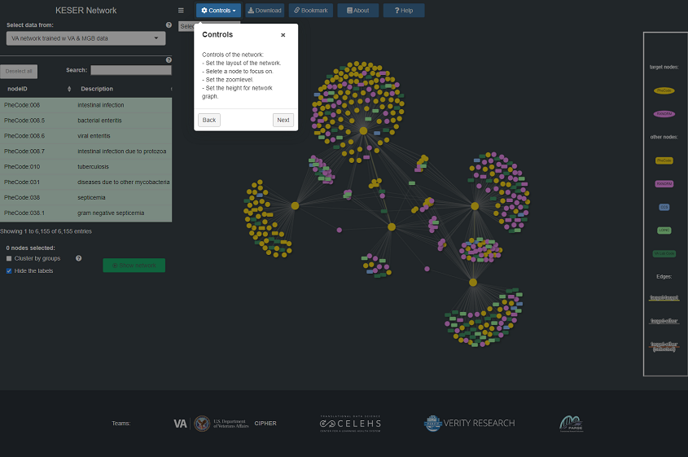
Download
Download the data of the candidate nodes.
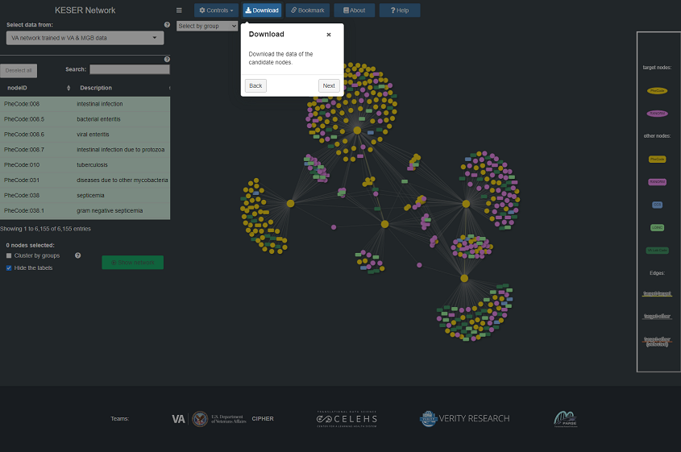
Bookmark
Bookmark this application's state and get a URL for sharing.
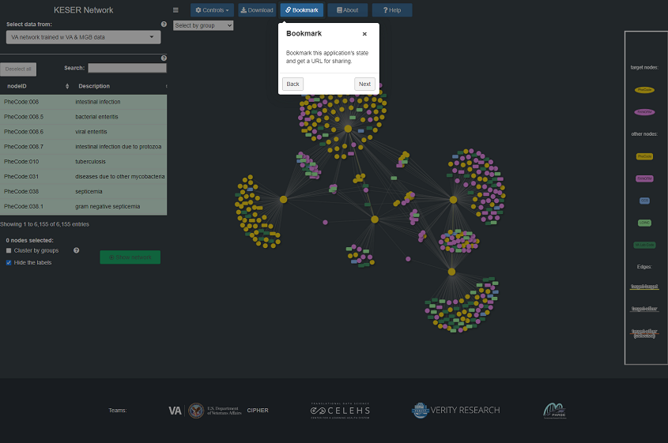
About
Overview of the KESER App.
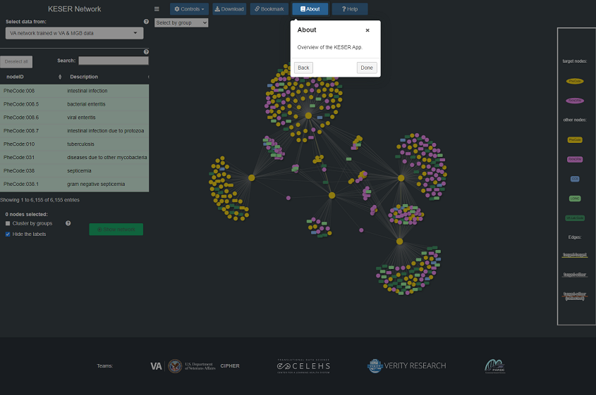